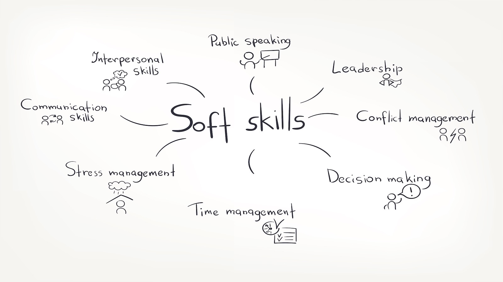

- Specialize in a Technology Area :
- Skill Enhancement :
- Build a Strong Portfolio :
- Internships and Real-world Experience :
- Networking :
- Soft Skills Development :
- Job Search Strategies :
Identify your areas of interest within the field of computer applications. It could be software development, database management, networking, cybersecurity, or other specialized areas. Specializing can make you more marketable in specific job markets.

Stay updated with the latest technologies and trends in the IT industry. Consider acquiring
additional certifications in relevant technologies such as Java, Python, web development,
cloud
computing, or any other area of interest. This enhances your skill set and makes you stand
out.
check out our courses recomendetion :- click here

Create a portfolio showcasing your projects, internships, and any practical experience you have gained during your BCA program. This can be a valuable asset when applying for jobs and internships. Create a portfolio website that shows all your academic marks, projects, achievements and etc.
Gain practical experience through internships or part-time jobs. Real-world experience is highly valued by employers and can significantly enhance your employability. Search Companies for internships through platform like LinkedIn, Indeed and etc.

Attend industry events, seminars, and conferences. Build a professional network through platforms like LinkedIn. Networking can open up job opportunities, provide mentorship, and keep you informed about industry trends.

Work on developing soft skills like communication, teamwork, problem-solving, and time management. Soft skills development involves honing interpersonal and communication abilities, adaptability, and emotional intelligence. These qualities complement technical expertise, fostering effective collaboration, problem-solving, and overall personal growth.
Utilize online job portals, company career pages, and networking connections for job searching. Tailor your resume for each application, emphasizing relevant skills and experiences. Like LinkedIn, Indeed, etc.
Welcome to Your Ultimate Guide to MCA and Entrance Exams
Embark on a journey of advanced learning and career excellence with our comprehensive guide to Master of Computer Applications (MCA). Whether you're a BCA graduate aiming to elevate your skills or a tech enthusiast ready to delve into the dynamic world of computing, this page is your go-to resource for all things MCA.
Details of MCA entrance exams conducted by top universities all over India
- NIMCET (for NIT's)
- RMCAAT (for rajasthan universities like- MBM, etc.)
- CUET (for central universities like- JNU, DU, etc)
- MAH CET (for maharastra universities)
- JMI Entrance (for jamia university)
four main topic that you have to learn to crack these entrance exam:-
- Maths
- Reasoning and Quantative Aptitude
- Computer Basics
- General English
Elegibility Criteria :-
- General category students must have secured at least 60% and reserved category students must have score 55% aggregate at graduation level.
- Students must have a BCA degree from a recognized university.
Top 10 MCA College in India Based on 2024 Ranking
- Christ University, Bangalore, Karnataka
- NIT Trichy, Tiruchirappalli, Tamil Nadu
- NIT Warangal, Warangal Telangana
- Jawaharlal Nehru University - [JNU], New Delhi
- Delhi University - [DU], New Delhi
- Presidency College, Bangalore, Karnataka
- National Institute of Technology - [NITK], Surathkal, Karnataka
- University of Hyderabad - [UOH], Hyderabad, Telangana
- Motilal Nehru National Institute of Technology - [MNNIT], Allahabad, Uttar Pradesh
- Jamia Millia Islamia University-[JMI], New Delhi
Honourable Mention :- JNVU University, Jodhpur